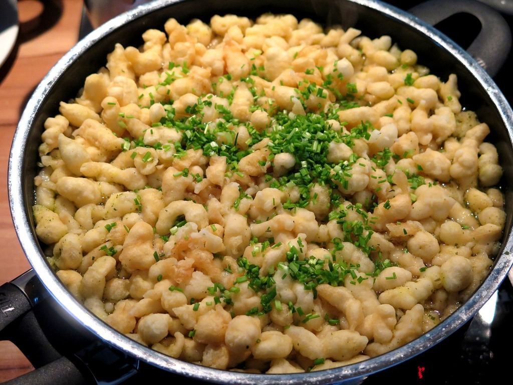

White Bean & Spinach Skillet
Back to home page

This White Bean & Spinach Skillet is a different take on Marry Me Chicken, a dish traditionally
made with chicken coated in a sun-dried tomato cream sauce. By swapping in fiber-packed white
beans and spinach as the main ingredients, we´ve given it a vegetarian spin.
Yields 4 servings.
Ingredients
- 2 tablespoons extra-virgin olive oil
- 1/2 cup finely chopped shallots
- 1/2 cup drained oil-packed sun-dried tomatoes, chopped
- 4 medium cloves garlic, minced
- 1/2 teaspoon salt
- 1/2 cup dry white whine
- 2 (5-ounce) packages baby spinach
- 2 (15-ounce) cans cannelloni beans
- 1/2 cup unsalted vegetable broth
- 1/2 cup heavy cream
- 1/2 cup grated Parmesan cheese
- 1 tablespoon chopped fresh basil
- Crusty bread for serving
Directions
- Heat 2 tablespoons oil in a large skillet over medium heat. Add a cup shallots and a cup
sun-dried tomatoes; cook, stirring often, until the shallots are softened, about 3 minutes.
- Add minced garlic and a teaspoon salt; stir until fragrant, about 30 seconds. Add a cup wine
and increase heat to medium-high; cook, stirring often, until the wine is almost fully
reduced, about 2 minutes.
- Add 2 (5-ounce) packages baby spinach; cook, stirring, until starting to wilt, about 2
minutes. Add rinsed beans and a cup broth; cook, stirring gently, until heated through and the
spinach is wilted, about 2 minutes.
- Remove from heat; stir in a cup cream and a cup Parmesan. Sprinkle evenly with the remaining
2 tablespoons plus 2 teaspoons Parmesan. Sprinkle with 1 tablespoon basil. Serve with crusty
bread, if desired.